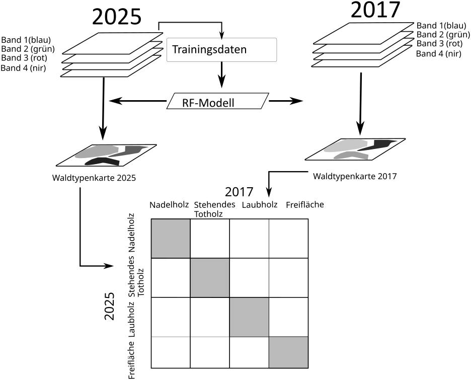

9 Lerneinheit 09: Analyse der Waldflächenänderung im Nationalpark Harz (2017-2025)

9.1 Lernziele & Aufgabenstellung
In der der Übung (Kapitel 7) haben wir mithilfe eines automatischen Bildklassifikationsverfahrens eine einfache Waldtypenkarten für den Nationalpark Harz erstellt. Dafür wurden Trainingsdaten erhoben und ein RandomForest Klassifikationsmodell erstellt. In der vorliegenden Übung wollen dieses Modell verwenden um ein älteres Satellitenbild zu klassifizieren und eine Waldtypenkarte für das Jahr 2017 zu erstellen. Anschließend sollen die Waldtypenkarten mit einander verglichen und die Änderungen der Waldflächen bestimmt werden.

Lernziele
Die Studierenden sollen:
- Ein bestehendes Klassifikationsmodell auf einen weiteres Satellitenbild anwenden.
- Zwei Waldtypenkarten mithilfe einer Änderungsmatrix vergleichen.
- Die Waldflächenänderungen bestimmen.
Aufgaben
- Raster- und Vektordaten importieren
- Erstellen einer Waldtypenkarte für das Jahr 2017
- Erstellen einer Änderungsmatrix
- Auswertung der Änderungsmatrix zur Bestimmung der Waldflächenänderungen
9.2 Aufgabe 0: Anlegen eine neuen QGIS-Projektes und Kontrolle des Nutzerprofils
Folgen sie der Anleitung aus LE01 Kapitel 1.3 um eine neue Ordnerstruktur und ein neues QGIS-Projekt für LE09 anzulegen. In der Übung bietet es sich an den Ordner “daten” weiter in die Unterordner “vektor” und “raster” zu unterteilen.
Prüfen sie außerdem ob Ihr Nutzerprofil korrekt geladen wurde und ob die OTB-Funktionen im Werkzeugkasten vorhanden sind. Sollte dies nicht der Fall sein stellen sie ihr gesichertes Nutzerprofil wieder her (siehe auch LE01 Kapitel 1.2.4).
9.3 Aufgabe 01: Download und Import der Geodaten
9.3.1 Satellitenbilder & Waldtypenkarten
Laden sie sich die Waldtypenkarte für das Jahr 2017 (“NP_Harz_2025_06_12_Waldtypen.tif”) aus der Übung Kapitel 7 in ihr Projektordner und QGIS. Falls sie keinen Zugang zu dieser Karte mehr haben können sie sich unter folgendem Link eine Kopie herunterladen:
https://cloud.hawk.de/index.php/s/e8oqsCezoQYft6C
Der Waldzustand im Jahr 2025 soll mit der Situation vor den großen Kalamitäten im Jahr 2017 verglichen werden. Für die Erstellung einer Waldtypenkarte in 2025 soll das gleiche RandomForest Klassifikationsmodell verwendet werden. Daher ist es wichtig, dass die Satellitenbilder der beiden Jahre miteinander vergleichbar sind. Wir nutzen dazu ein Satellitenbild des selben Sensors (S2-MSI), welches zu einem ähnlichen phänologischen Zeitpunkt (Juni) aufgenommen wurde. Sie können das vorbereitete Sentinel-2 Satellitenbild hier herunterladen:
https://cloud.hawk.de/index.php/s/QWPY2984sb3jmT9
Für die farbige Darstellung der thematischen Karte können Sie die Stildatei zusätzlich herunterladen:
9.3.2 Vektordaten
Laden Sie sich außerdem die Außengrenzen des Nationalparks herunter:
9.3.3 Modelle
Für die Klassifikation nutzen wir das RandomForest-Klassifikationsmodell welches in der Übung Kapitel 7 auf Basis der Trainingsdaten angelegt haben noch einmal.
9.4 Aufgabe 02: Erstellen der Waldtypenkarte 2017
Laden sie das 2017’er Satellitenbild in das QGIS Projekt. Nutzen sie anschließend die OTB-Funktion “ImageClassifier” um mithilfe des RF-Modells eine neue Waldtypenkarte für das Jahr 2017 zu erstellen. Speichern sie die neue Waldtypenkarte als Raster unter dem Dateinamen NP_Harz_2017_06_01_Waldtypen.tif ab. Nutzen sie dazu auch die Hinweise aus Kapitel 7.6.
Stellen sie vor dem nächsten Schritt sicher, dass die Waldtypenkarte des Jahres 2017 auf den NP-Harz zugeschnitten sind.
In der OTB-Funktion imageClassifier können sie eine Maske angeben. Wenn sie hier das Satellitenbild NP_Harz_2017_06_12.tif wählen, wir die Klassifikation direkt auf den Bereich des NP-Harzes beschränkt und die äußeren Flächen als Leerwerte markiert.
- Wie beurteilen sie die Genauigkeit der Klassifikation für das Jahr 2017?
- Welche Probleme sehen sie bei der Übertragen des Klassifikationsmodells aus dem Jahr 2025 auf das Jahr 2017?
9.5 Aufgabe 03: Erstellen einer Änderungsmatrix
Vergleichbar zur Fehlermatrix, werden in der Änderungsmatrix die Klassifikationsergebnisse der beiden Jahre in einer Matrix gegenüber gestellt. Da beide Klassifikationen auf den S2-Satellitenbildern beruhen, kann der Vergleich direkt auf der Ebene der einzelnen Pixel durchgeführt werden. Es muss also kein systematisches Punktraster erstellt werden. Auch für den Vergleich auf Pixelebene kann die OTB-Funktion “ComputeConfusionMatrix” genutzt werden.
Hier bei werden folgende Einstellungen gewählt:
Input Image: NP_Harz_2017_06_01_Waldtypen.tif
Output format: confusionmatrix
Ground Truth: raster
Input Reference Image: NP_Harz_2025_06_12_Waldtypen.tif
Matrix output: waldtypen_aenderungs_matrix.cm
Als Ergebnis wird eine Textdatei erzeugt, in der die Pixelwerte aus dem Jahr 2025 in den Spalten und die Referenzwerte aus dem Jahr 2017 in den Zeilen aufgetragen sind. In der Diagonale befinden sich die Pixel die zu beiden Zeitpunkten der gleichen Klasse zugeordnet wurden.
9.6 Aufgabe 04: Berechnung der Flächenänderungen
Nutzen sie ein Tabellenkalkulationsprogramm um aus der Textdatei eine Änderungsmatrix für die zwei Zeitpunkte zu erstellen. Dabei sollten zwei Versionen der Änderungsmatrix erarbeitet werden:
- mit der Anzahl der Pixel
- mit den ha-Werten.
Nutzen sie die beiden Matrizen zum beantworten folgender Fragen:
- Wie groß ist der Anteil an Verlust von Nadelholzflächen im NP-Harz zwischen 2017-2025?
- Wie viel ha Freiflächen gibt es im NP-Harz im Jahr 2025?
- Wie hat sich der Anteil der stehenden Totholzflächen von 2017-2025 geändert?